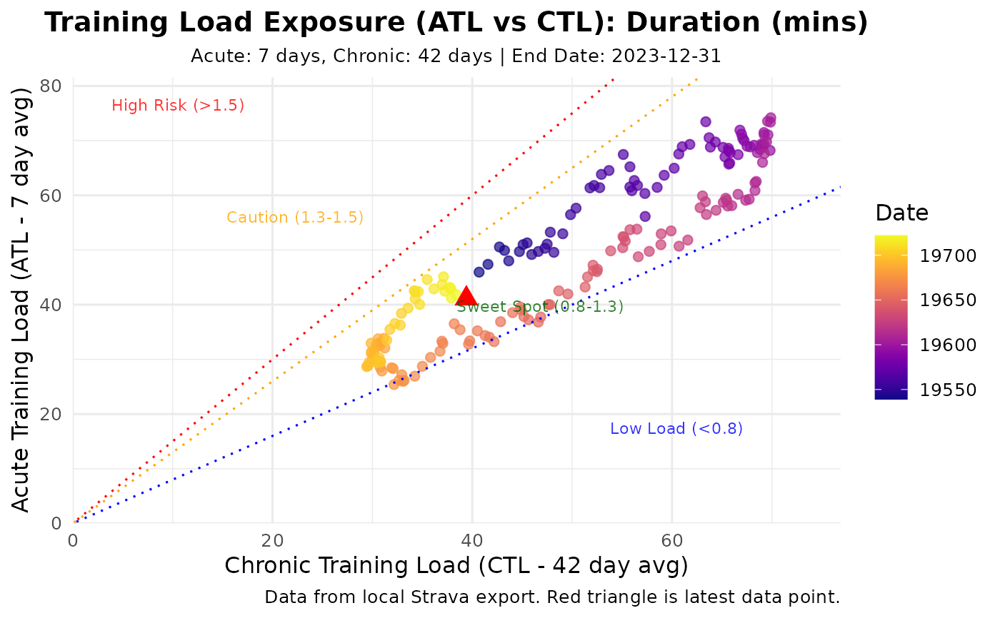

Visualizes the relationship between Acute and Chronic Training Load.
Usage
plot_exposure(
data,
risk_zones = TRUE,
show_date_color = TRUE,
caption = NULL,
axis_limit = NULL,
title = NULL,
subtitle = NULL,
...
)Arguments
- data
A data frame from
calculate_exposure(). Must containdate,atl, andctlcolumns.- risk_zones
Add background shading for typical ACWR risk zones? Default
TRUE.- show_date_color
Logical. Whether to color points by date (gradient). Default
TRUE. The date gradient helps visualize the training trajectory over time: lighter colors represent earlier dates and darker colors represent more recent dates, so you can trace how training state has evolved across a season. Set toFALSEfor a simpler single-color plot (useful when the temporal ordering is less important than the overall distribution).- caption
Plot caption. Default NULL (no caption).
- axis_limit
Optional. Numeric value to set both x and y axis limits (0 to axis_limit). Useful when plotting risk zones without data or with sparse data. Default NULL (auto-scale).
- title
Optional. Custom title for the plot.
- subtitle
Optional. Custom subtitle for the plot.
- ...
Additional arguments. Arguments
activity_type,load_metric,acute_period,chronic_period,user_ftp,user_max_hr,user_resting_hr,end_date,exposure_dfare deprecated and ignored.
Details
Visualizes training state by plotting ATL vs CTL (related to PMC charts).
Points are colored by date, latest point is highlighted (red triangle).
Optional risk zones (based on ACWR thresholds ~0.8, 1.3, 1.5) can be shaded.
Best practice: Use calculate_exposure() first, then pass the result to this function.
Examples
# Example using simulated data
data(sample_exposure)
# Ensure exposure_df is named and other necessary parameters like activity_type are provided
p <- plot_exposure(sample_exposure)
print(p)
#> Warning: Removed 27 rows containing missing values or values outside the scale range
#> (`geom_point()`).

# Runnable example with dummy data:
end <- Sys.Date()
dates <- seq(end - 59, end, by = "day")
dummy_activities <- data.frame(
date = dates,
type = "Run",
moving_time = rep(3600, length(dates)), # 1 hour
distance = rep(10000, length(dates)), # 10 km
average_heartrate = rep(140, length(dates)),
suffer_score = rep(50, length(dates)),
tss = rep(50, length(dates)),
stringsAsFactors = FALSE
)
# Calculate Exposure (ATL/CTL)
exposure_result <- calculate_exposure(
activities_data = dummy_activities,
activity_type = "Run",
load_metric = "distance_km",
acute_period = 7,
chronic_period = 28,
end_date = end
)
plot_exposure(exposure_result)